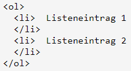
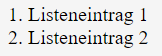
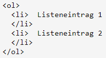
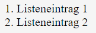

|
 |  |
Die Elemente (also der Inhalt) der Listen werden zwischen den Tags
<li> Listeninhalt </li> platziert.
|
|
 |  |
| Der Aufbau von ungeordneten bzw. unnummerierten Listen ist identisch zu den geordneten Listen, nur das entsprechende Listen-Tag ändert sich (siehe oben). Mit dem Attribut type können die Aufzählungs-Symbole verändert werden. |  |
Folgende Aufzählungszeichen sind möglich: